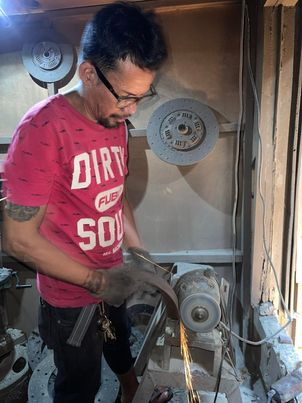

We do rebonding all kinds of brake drum like in any light and moderate vehicle
Bonding brake pad

We do rebonding of all kinds of brake pads like in any light and moderate vehicle
CLUTCH RELINING

We do relining of all kinds of clutch like in any light and moderate vehicle